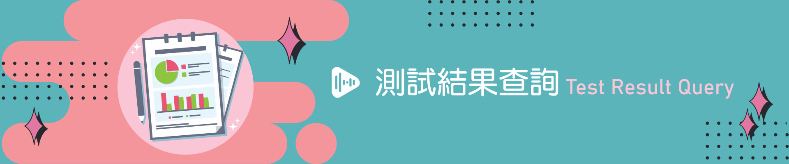

{% if grouped_results %} {% if type_stats %}| 類型 | 次數 | 比例 (%) |
|---|---|---|
| {{ stat.type_name }} | {{ stat.count }} | {{ stat.percentage }} |
正確率： {{ group.accuracy }} %
{% endif %}批次 ID： {{ group.batch_id }}
開始時間： {% if group.start_time %} {{ group.start_time.strftime("%Y-%m-%d %H:%M:%S") }} {% else %} 未知 {% endif %}
| 時間 | 關卡 | 小朋友選擇 | 系統判斷 | AI 判斷表情 | 截圖 | 人工覆核 |
|---|---|---|---|---|---|---|
| {{ record.test_datetime }} | {{ record.stage }} | {{ record.system_result }} | （此列為小朋友選擇，無 AI 判斷） | 無 | 無圖片 | {% if record.manual_override %} 已覆核 {% endif %} |
| {{ rec.test_datetime }} | {{ rec.stage }} | （AI 判斷，不適用） | {{ rec.system_result }} | {{ rec.ai_emotion }} | {% if rec.image_file %} 查看圖片 {% else %} 無圖片 {% endif %} | {% if rec.manual_override %} 已覆核 {% endif %} |